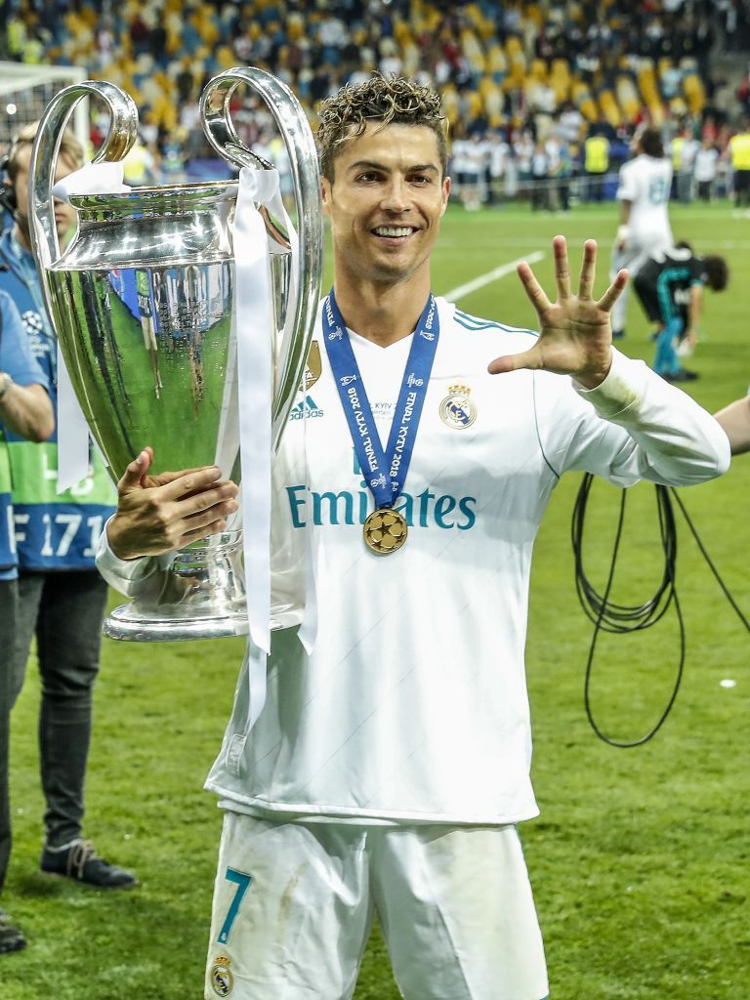
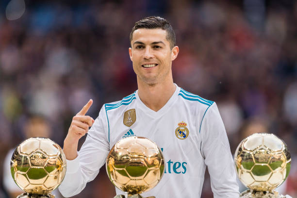

- Team Titles: Dominating Europe and the World.
Ronaldo has secured over 33 official trophies across his journey with various clubs and the national team, most notably:
- UEFA Champions League (5 Titles):
One title with Manchester United (2008) and four with Real Madrid, including an iconic three-peat (2014, 2016, 2017, 2018).
- Major League Titles:
He won the English Premier League (3 times), La Liga (2 times), and Serie A (2 times).
- FIFA Club World Cup:
Won the trophy 4 times.
- National Glory (Portugal):
He led his country to win Euro 2016 (Portugal's first major continental title) and the UEFA Nations League in 2019.
- Individual Awards: The Throne of Excellence:
Ronaldo reigned as the best player in the world for over a decade, accumulating awards that are difficult to replicate:

- Ballon d'Or:
5 times (2008, 2013, 2014, 2016, 2017).
- FIFA’s The Best:
2 times (2016, 2017).
- European Golden Shoe:
4 times as the top scorer in European leagues.
- Puskás Award:
For the best goal in the world in 2009.
- Historical Records: A Goal-Scoring Machine:
By 2026, Ronaldo has solidified his status as the greatest goal-scorer in the history of official football:
- All-Time Top Scorer in Football:
Surpassing the 900-goal mark in official matches, with a declared ambition to reach 1,000 goals.
- International Top Scorer:
Holds the world record for the most international goals (over 140 goals).
- Champions League All-Time Scorer:
With 140 goals.
- First player to score 100 goals for 4 different clubs
(Manchester United, Real Madrid, Juventus, and Al-Nassr).
- The Saudi Chapter and the Over-40 Challenge:
Since his move to Al-Nassr FC , Ronaldo has never ceased to amaze. In the 2023-2024 season, he set a record for the most goals scored in a single Saudi Pro League season (35 goals). In 2026, he continues to lead "Al-Alami" (The International), recording staggering scoring numbers despite being 41 years old—proving that age is just a number in his dictionary.
- Influence Beyond the Pitch:
Outside the stadium, Ronaldo is a global phenomenon:
- The most followed person on Instagram worldwide (over 670 million followers).
- A role model for physical and nutritional discipline, allowing him to play at an elite level at an age when most players have long since retired.